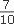
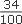
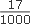
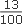
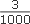
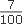
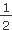
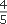
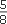

|
ѕравильные обыкновенные дроби, знаменатель которых равен 10, 100, 1000 и т.д. можно записывать в виде дес€тичной дроби.
Ќапример,  = 0,7;  = 0,34;  = 0,017
Ћюбую дес€тичную дробь с целой частью, равной нулю, легко записать в виде обыкновенной: в знаменатель записываетс€ единица с таким количеством нулей, сколько знаков после зап€той, в числитель - число, записанное после зап€той. Ќапример, 0,13 =  ; 0,003 =  .
≈сли дес€тична€ дробь имеет целую часть, отличную от нул€, то дробь записываетс€ как смешанное число. Ќапример, 4,07 = 4  .
„тобы обыкновенную дробь представить в виде дес€тичной, надо числитель дроби разделить на знаменатель.
Ќапример,  = 1 : 2 = 0,5;  = 4 : 5 = 0,8;  = 5 : 8 = 0,625;  = 2 : 3 = 0,666Е= 0,(6). = 2 : 3 = 0,666Е= 0,(6).
|